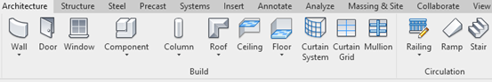
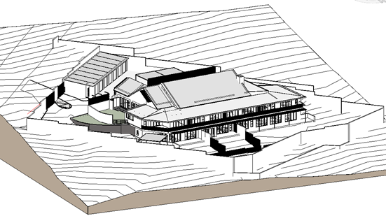
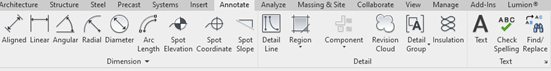
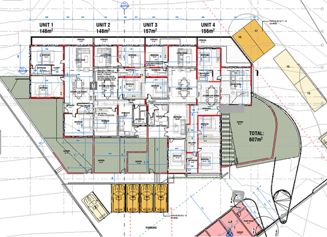
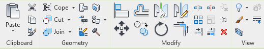
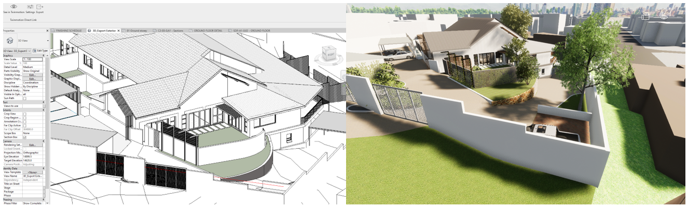

Revit (developed by Autodesk) is a BIM (Building Information Modelling) software for architects and engineers. It is an example of a CAD (Computer Aided Design) software that facilitates 3D and 2D design, allowing users to design buildings and structures along with 3D components as well as 2D annotation and drafting tools. The software is capable to design and document every step of the building construction lifecycle and is thus considered to be a 4D BIM tool (Graves, 2021).
According to the IEEE, the term ‘software feature’ is defined as: “A distinguishing characteristic of a software item (e.g., performance, portability, or functionality)” (IEEE, n.d.). Revit has evolved since its inception in 2000 into a software package with numerous features that define the tools that users need to build and document their projects in both 3D models and 2D sheets. These components have evolved into a complex structure of elements as seen in the BIM schema diagram below (UML format):

In general, the BIM model features (tools) present in Revit can be broken down into one of three categories namely:
Geometric Information – The vertices, edges and any other geometrical features that define the parts of the 3D building components. These tools include all the 3D and 2D building elements like: Walls, Floors, Roofs, 3D components and any other tool that defines 3D elements within the workspace, as well as annotation lines, text, dimensions etc. (Examples of 3D features in the below image)

These features (amongst others) can be used to construct the 3D model as below:

Examples of 2D features:

These features can be used to construct and annotate 2D plans resulting in drawings that the user can print and send to the contractor – as an example:

Spatial Information – Elaborates on the specific location and relative position and spatial relationships between elements. These are modifying tools and features that allow the user to move, copy, rotate, edit etc. the elements that are already placed within the workspace. These tools are commonly found in the ‘Modify” tab of Revit’ ribbon, and interacting with these tools will call functions that run the code of the Spatial Information type, typically:

Functional Information – Relates to additional attributes or properties that infer information that describes the environment of the building element such as the host information (element contained within another element). These groups are identified as families (or classes). Namely, the geometric information is stored within the ’GeometryObject’ family, the spatial information can be found in the ’Location’ family, and the functional information is spread out between the ’HostObject’, ’Instance’, and ’ElementType’ families. The exact building element information structure for each family and its categories and properties can be extracted according to the class diagram.
Within these different class types, Autodesk Revit is a software consisting of modules that define all the tools and features required to model and document any project, developed as an object-oriented system. Revit further publicly exposed its API to allow users to program their own functions and tools with Python or C# functions. These tools can be introduced into Revit in the form of a plugin, and many software that relate to the building industry have developed plugins that export the 3D built elements in a universal 3D format (such as .fbx, .obj or .gltf) and import these geometries along with data such as material information, elementIDs and any other relative metadata required for import into the relevant program.
As an example, Unreal Engine’s TwinMotion is a rendering engine that takes in 3D models and focuses on producing photorealisting renders by applying PBR (Physical Based Rendering) materials on the building elements. TwinMotion has a plugin that ensures that there is a live connection between Revit and TwinMotion, allowing the user to see their latest changes in real-time on the render. The plugin is written in C#, that connects with the Revit API, exporting the model in an .FBX format, and passing this geometry and material data directly to TwinMotion. Below is an example of the LiveSync functionality (Revit 3D model on the left, TwinMotion live feed on the right):

Overall, Revit is a versatile BIM software that has developed numerous features over its lifecycle that build and document a building throughout its lifecycle, and through its public API has allowed numerous 3rd party softwares to add to the value of the software itself. The modular manner in which the software is written allow for constant feature updates and allow for the introduction of new tools on every update.
REFERENCES
Graves, M., 2021. Architecture and the Lost Art of Drawing. The New York Times.
IEEE, n.d. Std 829-1998.